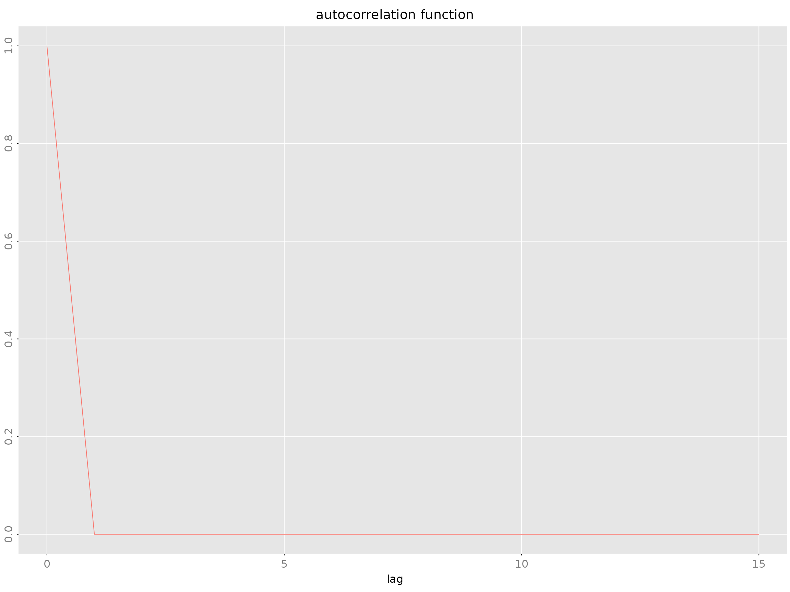
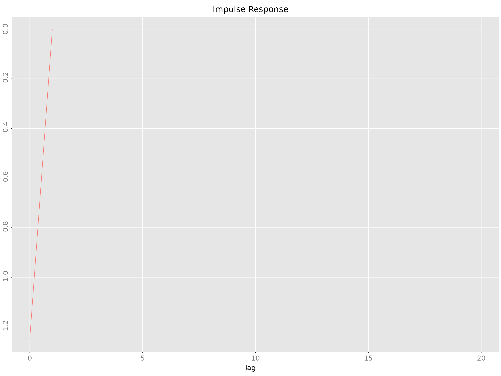

Technical Reference: RLDM Classes and Methods
Wolfgang Scherrer and Bernd Funovits
2026-01-22
2_technical_reference.RmdThis document is a reference guide for RLDM classes, mathematical foundations, and estimation methods. For practical examples, see the “Getting Started” and “Case Study” vignettes.
Preliminaries
Notation
The following notation is used throughout RLDM:
| Symbol | Meaning |
|---|---|
| Dimension of the output process | |
| Dimension of the noise process , typically | |
| Dimension of the state process (state space models only) | |
Sample size, denoted n.obs in code |
|
| Expectation operator | |
| Autocovariance at lag | |
| Noise covariance matrix |
Sign Convention
RLDM uses a non-standard sign convention for AR coefficients to maintain consistency with matrix fraction descriptions.
Standard form (often seen in time series textbooks):
RLDM form (matrix fraction description):
Notice the opposite signs on the AR coefficients. This ensures consistency when working with rational matrix fractions where:
with (identity matrix).
Model Classes
Overview: Model Representations
RLDM supports three equivalent ways to represent rational linear dynamic models:
1. Left Matrix Fraction Description (LMFD):
armamod
The ARMA/VARMA representation:
where and are polynomial matrices in the lag operator .
VARMA/ARMA Models: armamod Class
The armamod class represents VARMA
(multivariate ARMA) processes in left matrix fraction form.
Structure
An armamod object is an S3 list with the following
slots:
| Slot | Type | Description |
|---|---|---|
sys |
lmfd [m,n] |
Left matrix fraction: filter |
sigma_L |
double [n,n] |
Left square root of noise covariance () |
names |
character [m] |
Component names of |
label |
character |
Descriptive label for the process |
Class attribute:
c("armamod", "rldm")
Constructor
armamod(sys, sigma_L, names = NULL, label = NULL)Example:
# Create a simple AR(1) model: y_t = 0.8*y_{t-1} + u_t
# In RLDM convention: y_t - 0.8*y_{t-1} = u_t
a_coef <- matrix(-0.8) # negative sign for standard convention
b_coef <- matrix(1)
sys <- lmfd(a_coef, b_coef)
model <- armamod(sys, sigma_L = matrix(1), names = "Output", label = "AR(1)")
model
#> AR(1): ARMA model [1,1] with orders p = 0 and q = 0
#> AR polynomial a(z):
#> z^0 [,1]
#> [1,] -0.8
#> MA polynomial b(z):
#> z^0 [,1]
#> [1,] 1
#> Left square root of noise covariance Sigma:
#> u[1]
#> u[1] 1Available Methods
methods(class = 'armamod')
#> [1] as.stspmod autocov freqresp impresp ll poles
#> [7] predict print sim spectrald str zeroes
#> see '?methods' for accessing help and source codeKey methods: - autocov() - Compute
autocovariance function - impresp() -
Impulse response functions - spectrald() -
Spectral density - freqresp() - Frequency
response - predict() - Forecasting -
solve_de() - Simulate from the model -
print() / plot() -
Visualization
State Space Models: stspmod Class
The stspmod class represents processes in canonical
state space form.
Structure
An stspmod object is an S3 list with slots:
| Slot | Type | Description |
|---|---|---|
sys |
stsp [m,n] |
State space realization |
sigma_L |
double [n,n] |
Left factor of noise covariance |
names |
character [m] |
Component names |
label |
character |
Descriptive label |
Class attribute:
c("stspmod", "rldm")
Constructor
stspmod(sys, sigma_L, names = NULL, label = NULL)Example:
# Create a simple state space model
# s_{t+1} = 0.8*s_t + u_t
# y_t = s_t
A_matrix <- matrix(0.8)
B_matrix <- matrix(1)
C_matrix <- matrix(1)
D_matrix <- matrix(0)
sys <- stsp(A_matrix, B_matrix, C_matrix, D_matrix)
model_ss <- stspmod(sys, sigma_L = matrix(1))
model_ss
#> state space model [1,1] with s = 1 states
#> s[1] u[1]
#> s[1] 0.8 1
#> x[1] 1.0 0
#> Left square root of noise covariance Sigma:
#> u[1]
#> u[1] 1Available Methods
methods(class = 'stspmod')
#> [1] autocov freqresp impresp ll poles predict print
#> [8] sim spectrald str zeroes
#> see '?methods' for accessing help and source codeSimilar to armamod, state space models support: -
Autocovariance, impulse responses, spectral density computation -
Forecasting and simulation - Conversion to impulse response
representation
State Space Parameterizations
RLDM supports several standard state space canonical forms through template functions:
-
tmpl_DDLC()- Diagonal-Direct-Lead-Coefficient form -
tmpl_stsp_echelon()- Echelon canonical form -
tmpl_stsp_innovation()- Innovation form
Right Matrix Fraction Description: rmfdmod Class
The rmfdmod class represents processes in right matrix
fraction form (experimental, limited methods):
rmfdmod(sys, sigma_L, names = NULL, label = NULL)Most estimation and analysis methods are not yet implemented for this class.
Derived Objects
These classes represent computed properties of process models, not model specifications themselves.
Autocovariance: autocov Class
Stores autocovariances, autocorrelations, or partial autocorrelations.
Structure
| Slot | Type | Description |
|---|---|---|
acf |
array | Correlations/covariances at each lag |
type |
character |
“covariance”, “correlation”, or “partial” |
gamma |
array [m,m,lag.max+1] |
3D array of autocovariances |
names |
character [m] |
Variable names |
label |
character |
Descriptive label |
Computation
# From data
autocov.default(obj, lag.max = 20, type = "correlation")
# From model
autocov.armamod(obj, lag.max = 20, type = "correlation")
autocov.stspmod(obj, lag.max = 20, type = "correlation")Example:
# Generate AR model and compute ACF
y <- sim(model, n.obs = 500)
acov <- autocov(model, lag.max = 15, type = "correlation")
plot(acov)
Impulse Response: impresp Class
Stores impulse response coefficients: where .
Structure
| Slot | Type | Description |
|---|---|---|
irf |
array [m,n,n.lags] |
IRF coefficients |
sigma_L |
double [n,n] |
Noise covariance factor |
names |
character [m] |
Output variable names |
label |
character |
Descriptive label |
Computation
impresp.armamod(obj, lag.max = 40, H = NULL)
impresp.stspmod(obj, lag.max = 40, H = NULL)Example:

The H parameter allows custom orthogonalization
(default: Cholesky).
Spectral Density: spectrald Class
Frequency-domain representation: where is the frequency response.
Frequency Response: freqresp Class
The frequency transfer function .
freqresp.armamod(obj, n.f = 256)Forecast Error Variance Decomposition: fevardec
Class
Decomposes forecast error variance into contributions from each shock.
| Slot | Type | Description |
|---|---|---|
vd |
array [m,m,h] |
Variance decomposition |
v |
matrix [m,h] |
Forecast error variance |
names |
character [m] |
Variable names |
fevardec(obj, h.max = 40)Estimation Methods
AR Model Estimation
Yule-Walker Method: est_ar_yw()
Theory: Solves the Yule-Walker equations using Cholesky decomposition:
Advantages: - Statistically efficient (minimum variance) - Produces all AR orders simultaneously - Automatic log-determinant sequence for model selection
Example:
est_ar_yw(gamma, p.max = 10, penalty = -1)Durbin-Levinson-Whittle Method: est_ar_dlw()
Theory: Recursive algorithm for AR parameter and partial autocorrelation computation.
Advantages: - Numerically stable - Computes partial ACF - Efficient recursions
Example:
est_ar_dlw(gamma, p.max = 10, penalty = -1)Wrapper Function: est_ar()
Primary interface for AR estimation with automatic order selection:
est_ar(data, p.max = NULL, method = "auto",
ic = "AIC", mean_estimate = "sample.mean")Parameters: - ic: Information criterion
(“AIC”, “BIC”, “HQ”) - mean_estimate: How to estimate mean
(“sample.mean”, “zero”, or a vector) - method: “yw”
(Yule-Walker), “dlw” (Durbin-Levinson-Whittle), or “auto”
Returns: List with components: - model:
Estimated armamod object - p: Selected order -
stats: Criterion values for each order - ll:
Log-likelihood values
ARMA Model Estimation
Hannan-Rissanen-Kavalieris (HRK): est_arma_hrk()
Three-stage procedure for VARMA estimation without nonlinear optimization:
est_arma_hrk(data, tmpl = NULL, p = NULL, q = NULL,
mean_estimate = "zero")Stage 1: Estimate long AR model Stage 2: Compute initial ARMA estimates Stage 3: Refine using feasible GLS
Advantages: - Provides consistent initial estimates - No nonlinear optimization required - Suitable for maximum likelihood refinement
When to use: - Initial estimates for multivariate ARMA - Moderate to high-dimensional systems - When you want to avoid local optima
State Space Estimation
CCA Method: est_stsp_ss(method = "cca")
Canonical Correlation Analysis for determining state space order and initial estimates.
est_stsp_ss(data, method = "cca", s = NULL,
keep_models = FALSE, ...)Advantages: - Data-driven order selection - Suitable when no prior knowledge of system structure - Good numerical properties
Maximum Likelihood Estimation
General ML Framework: ll_FUN()
Create likelihood functions for structured parameter templates:
llfun <- ll_FUN(tmpl, data, skip = 0, which = "concentrated")Then optimize using standard R optimizers:
Parameter Templates
Templates map deep model parameters to linear parameters for optimization:
-
tmpl_DDLC()- Diagonal-Direct-Lead-Coefficient -
tmpl_arma_echelon()- ARMA in echelon form -
tmpl_stsp_echelon()- State space in echelon form
Workflow:
# Create template from initial estimate
tmpl <- tmpl_DDLC(model_initial, sigma_L = 'identity')
# Extract starting parameter vector
theta0 <- extract_theta(model_initial, tmpl)
# Create and optimize likelihood
llfun <- ll_FUN(tmpl, data, which = "concentrated")
opt <- optim(theta0, llfun, method = "BFGS", control = list(fnscale = -1, maxit = 500))
# Reconstruct model from optimized parameters
model_ml <- fill_template(opt$par, tmpl)Solution and Simulation
Solving Difference Equations
Forward Solution: solve_de()
Simulate forward from initial conditions:
y <- solve_de(sys, u, y_init = NULL)Inverse Solution: solve_inverse_de()
Extract residuals given data (solve backwards):
u <- solve_inverse_de(sys, y)$uMathematical Foundations
Stationary ARMA Processes
An ARMA process is described by:
where: - (AR polynomial) - (MA polynomial) - is white noise with
The process is stationary if all roots of lie outside the unit circle.
The stationary solution is:
where satisfy: .
Autocovariance Function
For stationary ARMA processes, the autocovariance function satisfies the generalized Yule-Walker equations:
Method Selection Guide
Choosing Between AR, ARMA, and State Space
| Method | When to Use | Advantages | Disadvantages |
|---|---|---|---|
| AR | Baseline, simple systems | Fast, stable, interpretable | May need high order |
| ARMA | Parsimonious fits | Fewer parameters | Parameter estimation harder |
| State Space | Complex systems, latent factors | Flexible, interpretable states | Requires order selection |
Model Comparison Workflow
-
Start with AR using
est_ar() -
Try state space with
est_stsp_ss()for dimensionality reduction - Compare with ARMA using HRK initial estimates + ML refinement
- Refine best model with parameter templates and optimization
- Validate using residual diagnostics, ACF, and spectral plots
Estimation Method Selection
| Task | Recommended Method |
|---|---|
| Order selection | AIC via est_ar()
|
| Quick state space | CCA via est_stsp_ss()
|
| Multivariate ARMA | HRK via est_arma_hrk()
|
| Maximum likelihood | Parameter templates + optim()
|
| Highly structured models | Custom templates with tmpl_*()
|
References
(Scherrer and Deistler 2019)